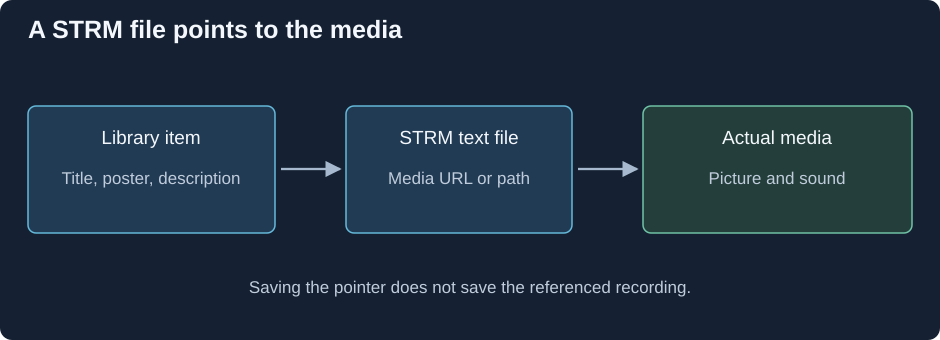

Media Pointer Files: STRM
A STRM file lets an Emby library item point to media stored elsewhere. The pointer is small because it stores a location; the movie's encoded tracks remain at that destination.

The library description, the pointer, and the media are three different objects.
Follow the address through the system. Emby recognizes the named library item and reads its text pointer. The media-opening path obtains the referenced source. That source is then examined for its tracks and delivered through an appropriate playback route. The STRM documentation defines the supported pointer contents and organization.
Two addresses that look similar can return different data
A website's video page supplies HTML and player code. The player can make another request for the actual movie or a streaming playlist. A pointer needs the media location supported by the opening path, rather than an arbitrary webpage that happens to display a video.
Similarly, a shared-file path is interpreted from the environment that opens it. A drive letter visible on an administrator's desktop may not exist for a server service. A network path can identify the same source more clearly, but access still depends on that process's credentials and connectivity. This is a location-resolution question before any codec is decoded.
What is preserved when the library is copied?
Copying the STRM file preserves its text address. Copying local library descriptions can preserve the displayed item. Neither operation copies the distant recording. The pointer's storage size therefore does not represent the movie's size, and an offline copy of the pointer does not provide offline movie bytes.
If the destination changes or an expiring address stops granting access, the item can remain visible while playback can no longer obtain its source. Update the address relationship or source availability; the library's retained title is not evidence that the media was fetched.
A useful failure trace follows the same boundaries: recognized item, readable pointer, resolved address, returned media rather than HTML, then source initialization. Once the actual media is obtained, its container and selected tracks determine the playback work just as they do for an ordinary local source.